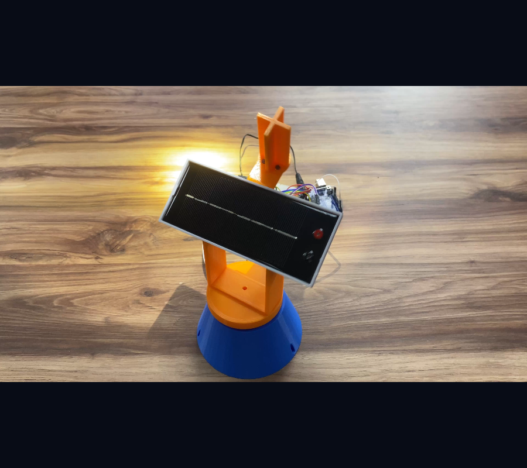

ინოვაციების ინკუბატორები / პროექტი 14
Solar Tracker.
მზის პანელის ტრეკერი
მზის პანელის ტრეკერის სასწავლო პროტოტიპი — პანელი, საყრდენი კონსტრუქცია და ელექტრონიკა ერთ მოდელში.
მზის ენერგიაინჟინერიაპროტოტიპი
პროექტის ვიდეო ↓
პროექტის შესახებ
მზის ენერგია —
პრაქტიკული კვლევის თემა.
„Solar Tracker“ მზის პანელის ტრეკერის სასწავლო პროტოტიპია. პროექტი აერთიანებს პანელს, საყრდენ კონსტრუქციასა და ელექტრონულ კომპონენტებს.
ვიდეოში ჩანს აწყობილი მოდელი და მისი გამოცდის გარემო. გვერდის მთავარი გამოსახულება ამავე ვიდეოდან აღებული რეალური კადრია.
პროექტის მასალები